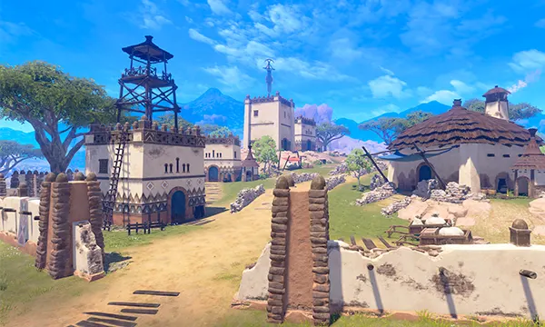

Ribeira
Abrir en la wiki →Ciudad. Esta pequeña aldea de montaña es el hogar de granjeros y cazadores
- Tipo
- ciudad
- Conecta con
- Fuerte de la sierra Veletta, Llanura de Aesobos

Ciudad. Esta pequeña aldea de montaña es el hogar de granjeros y cazadores